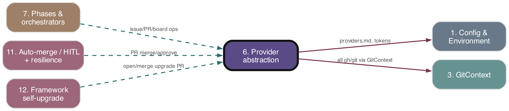

Provider abstraction
As-is reference. Ground truth: source code.

Purpose
Provides a pluggable, platform-agnostic seam so ADW workflow phases never call GitHub/GitLab/Jira directly. Three interfaces — IssueTracker, CodeHost, BoardManager — are bundled into an immutable RepoContext resolved at workflow entry from .adw/providers.md (or explicit options). Beneath the provider layer sits a thin GitHub API wrapper (adws/github/*) of gh/REST/GraphQL helpers that delegate to GitContext; this layer is the legacy, GitHub-only path the providers wrap and that most callers still use directly.
Responsibilities
- Define the portability contract:
RepoIdentifier,Platformenum,Issue/IssueComment,PullRequest/ReviewComment/CreatePROptions,BoardStatus/BOARD_COLUMNS, and the three provider interfaces. - Resolve and validate a
RepoContext(createRepoContext): validate repo id, working dir is a git repo, gitoriginmatches the declared owner/repo, then resolve provider instances andObject.freezethe result. - Load provider platform config from
.adw/providers.md(loadProviderConfig) with GitHub defaults. - GitHub implementations (
IssueTracker,CodeHost,BoardManager) that wrapissueApi/prApi/projectBoardApiand map GitHub-shaped types to agnostic types via puremappers.ts. - GitLab (
CodeHost,BoardManager) and Jira (IssueTracker,BoardManager) implementations. - GitHub API wrapper layer: issue/PR/label/project-board ops, GitHub App installation-token auth (
githubAppAuth), repo-info parsing, PR-by-branch selection, linked-PR/issue-link detection.
Key Files
| Path | Role |
|---|---|
| --- | --- |
adws/providers/types.ts |
All agnostic interfaces, types, enums (Platform, BoardStatus, BOARD_COLUMNS), validateRepoIdentifier, RepoContext type |
| --- | --- |
adws/providers/repoContext.ts |
createRepoContext factory, validation, loadProviderConfig, resolveIssueTracker/CodeHost/BoardManager, git-remote parsing |
| --- | --- |
adws/providers/index.ts |
Barrel re-export of types + all platform impls |
| --- | --- |
adws/providers/github/{githubIssueTracker,githubCodeHost,githubBoardManager,mappers}.ts |
GitHub provider impls + pure mappers |
| --- | --- |
adws/providers/gitlab/{gitlabCodeHost,gitlabBoardManager,gitlabApiClient,gitlabTypes,mappers}.ts |
GitLab impls over curl REST client |
| --- | --- |
adws/providers/jira/{jiraIssueTracker,jiraBoardManager,jiraApiClient,jiraTypes,adfConverter}.ts |
Jira impls over REST v3; markdown↔ADF conversion |
| --- | --- |
adws/github/githubApi.ts |
RepoInfo, repo-info parsing, getAuthenticatedUser, barrel re-export of issue/PR API |
| --- | --- |
adws/github/issueApi.ts |
Issue fetch/comment/close/state/label/create via GitContext |
| --- | --- |
adws/github/prApi.ts |
PR details/reviews/comments/list/merge/approve; selectPreferredPR, defaultFindPRByBranch, fetchPRApprovalState |
| --- | --- |
adws/github/labelManager.ts |
adw:* label definitions, lifecycle (ensureAdwLabelsExist, applyLabel), pure read-side (readAdwLabelNames) |
| --- | --- |
adws/github/projectBoardApi.ts |
moveIssueToStatus (thin adapter over GitContext GraphQL) |
| --- | --- |
adws/github/githubAppAuth.ts |
JWT→installation-token exchange, per-repo token cache, activateGitHubAppAuth, git-identity env setup |
| --- | --- |
adws/github/gitContextFactory.ts |
gitContextForRepo/gitContextForSync — builds GitContext from ambient auth+identity |
| --- | --- |
adws/github/{issueLinkMarker,linkedPrDetector}.ts |
Canonical Closes/Implements #N regex + merged/closed-PR detection |
| --- | --- |
adws/github/workflowComments*.ts, prCommentDetector.ts, proofCommentFormatter.ts, hitlBoardNotifier.ts |
ADW comment formatting/parsing and board→Slack notifier |
| --- | --- |
adws/types/issueRouting.ts |
Issue-type → orchestrator/commit/branch-prefix maps |
Behavior & Flows
- Context creation:
createRepoContext({repoId, cwd, ...})validates id/dir/remote; selects platforms from explicit options →providersConfig→loadProviderConfig(cwd)(reads.adw/providers.md## Code Host/## Issue Trackerheadings, GitHub default); resolves providers;boardManagerresolution is wrapped in try/catch so unsupported platforms simply omit it; returns frozenRepoContext. - GitHub providers: constructed bound to a
RepoInfo(toRepoInfo(repoId)); each method delegates to the correspondinggithub/*function passing the bound repo, then maps results — never relies on a global repo registry. - GitHub API wrapper: every helper calls
gitContextForRepo(repoInfo)to get a fresh GitContext, runs agh/REST/GraphQL command, JSON-parses, and transforms to ADW types. Many helpers are fail-soft (log + returnfalse/[]/null); a few (fetchIssue,createIssue,updateIssueBody,deleteIssueComment) throw. - App auth:
activateGitHubAppAuth(whenGITHUB_APP_*env set) signs a 10-min RS256 JWT, resolves installation id via REST, exchanges for an installation token cached perowner/repo(5-min refresh buffer), setsprocess.env.GH_TOKEN+ git-identity bot env vars.gitContextFactory.resolveTokenorder: App token →GH_TOKEN→gh auth token. - Board manager (GitHub): GraphQL find/create ProjectsV2, link to repo, and
ensureColumnsmerges existing Status options withBOARD_COLUMNSviamergeStatusOptions(preserves option ids, inserts missing columns at order-anchored positions).moveIssueToStatusalso fires a Slack HITL notification when target isreview. - Labels: six canonical
adw:*labels;applyLabellazy-creates a missing label on "not found" then retries; purereadAdwLabelNamesderives opt-out / classification / conflict. - Jira/GitLab divergences: Jira maps status categories (
new/indeterminate/done) to ADW states and uses fuzzy transition matching; someIssueTrackermethods are sync-signature but Jira is async, so they fire-and-forget and return placeholders (getIssueState→'UNKNOWN'). GitLab uses a curl-basedGitLabApiClient, requiresGITLAB_TOKEN.
Data Structures
Platformenum (github/gitlab/bitbucket);RepoIdentifier {owner, repo, platform};RepoInfo {owner, repo}(GitHub-layer shape).Issue,IssueComment,PullRequest,ReviewComment,CreatePROptions,PullRequestResult.BoardStatusenum +BoardColumnDefinition+BOARD_COLUMNSordered list (Blocked/Todo/In Progress/Review/Done).RepoContext = Readonly<{issueTracker, codeHost, boardManager?, cwd, repoId}>.ProviderConfig(parsed from.adw/providers.md);AdwLabelDefinition,AdwLabelReading;LinkedPRRef;RawPR/RawPRListEntry.
Public Interface
- Interfaces:
IssueTracker,CodeHost,BoardManager; typeRepoContext. - Factories:
createRepoContext,createGitHubIssueTracker/CodeHost/BoardManager,createGitLabCodeHost/BoardManager,createJiraIssueTracker/BoardManager;gitContextForRepo/gitContextForSync. - GitHub helpers (re-exported via
adws/github/index.ts):fetchGitHubIssue,commentOnIssue,closeIssue,getIssueState,issueHasLabel,addIssueLabel,createIssue,updateIssueBody,findOpenUpgradeIssue,fetchPRDetails,fetchPRReviewComments,commentOnPR,mergePR,approvePR,fetchPRList,fetchPRApprovalState,selectPreferredPR,defaultFindPRByBranch,moveIssueToStatus, label-manager API,activateGitHubAppAuth/getInstallationToken/refreshTokenIfNeeded,bodyLinksIssue,hasLinkedMergedOrClosedPR,getRepoInfo*,getAuthenticatedUser.
Dependencies
- Upstream (depends on):
- 3. GitContext — every GitHub helper and provider routes through
gitContextForRepo/gitContextForSync; the actualgh/git/GraphQL execution lives in GitContext. - 1. Config & Environment —
REPO_ROOT,TARGET_REPOS_DIR,GITHUB_PAT,GITLAB_TOKEN,JIRA_*,GITHUB_APP_*;ProvidersConfigfromcore/projectConfig;.adw/providers.md. corelog/execWithRetry; nodechild_process/crypto/fs.- Downstream (depended on by):
- 7. Phases & orchestrators —
workflowInit,prReviewPhase,upgradeGate,phaseCommentHelpersbuild/consumeRepoContextand call issue/PR/board helpers. - 10. Triggers / 11. Auto-merge/HITL/resilience — label classification, linked-PR detection, PR selection/merge/approval, pause-queue scanner.
- 12. Framework self-upgrade —
findOpenUpgradeIssue,hasWontFixLabel,adw:upgradelabel.
Interactions
| Other subsystem | Direction | What is exchanged |
|---|---|---|
| --- | --- | --- |
| 3. GitContext | depends-on | All command execution; providers/helpers wrap GitContext via gitContextForRepo |
| --- | --- | --- |
| 7. Phases & orchestrators | called-by | Supplies RepoContext + issue/PR/board ops to workflow phases |
| --- | --- | --- |
| 1. Config & Environment | depends-on | Platform selection from .adw/providers.md/ProvidersConfig; tokens/secrets env vars |
| --- | --- | --- |
| 10. Triggers | called-by | Issue classification labels, orchestrator routing maps, repo-info parsing |
| --- | --- | --- |
| 11. Auto-merge / HITL + resilience | called-by | PR approval/merge state, linked-PR detection, board review → Slack notify |
| --- | --- | --- |
| 12. Framework self-upgrade | called-by | adw:upgrade issue lookup, wontfix-label idempotency guard |
| --- | --- | --- |
| 13. Cost telemetry & D1 | none-direct | (no direct coupling) |
PRD Divergences
No orienting PRD for this subsystem. Observed in-code notes rather than PRD gaps:
- githubAppAuth.activateGitHubAppAuth sets process.env.GH_TOKEN as an explicitly "transitional boundary provisioning" shim for legacy callers not yet on gitContextForRepo (refs #661/#662).
- BoardManager resolves from the code host platform, not the issue tracker (per resolver comment).
- Jira IssueTracker sync-signature methods (getIssueState, fetchComments) cannot satisfy Jira's async API and return placeholders — a documented interface mismatch.
- Platform.Bitbucket is defined but has no implementation; validateRepoIdentifier accepts it but resolvers throw.